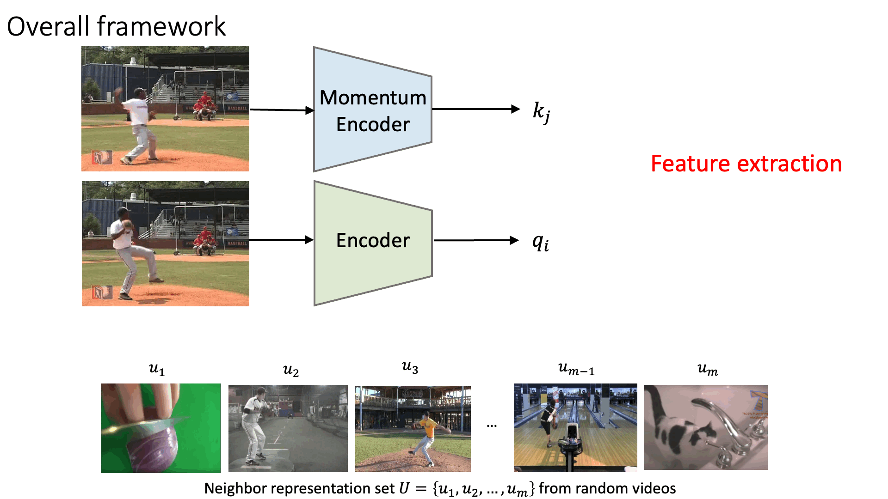
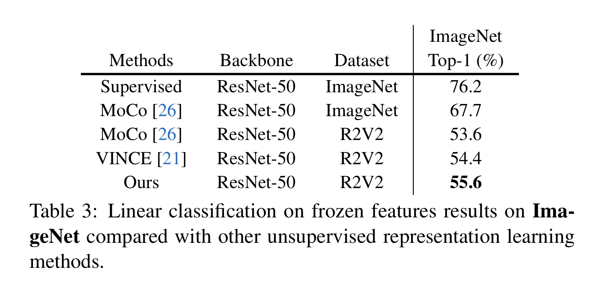

Recent works have advanced the performance of self-supervised representation learning by a large margin. The core among these methods is intra-image invariance learning. Two different transformations of one image instance are considered as a positive sample pair, where various tasks are designed to learn invariant representations by comparing the pair. Analogically, for video data, representations of frames from the same video are trained to be closer than frames from other videos, i.e. intra-video invariance. However, cross-video relation has barely been explored for visual representation learning. Unlike intra-video invariance, ground-truth labels of cross-video relation is usually unavailable without human labors. In this paper, we propose a novel contrastive learning method which explores the cross-video relation by using cycle-consistency for general image representation learning. This allows to collect positive sample pairs across different video instances, which we hypothesize will lead to higher-level semantics. We validate our method by transferring our image representation to multiple downstream tasks including visual object tracking, image classification, and action recognition. We show significant improvement over state-of-the-art contrastive learning methods.
Representation learning pipeline

Visual Object Tracking on OTB-100


Image Classification

Video Action Recognition